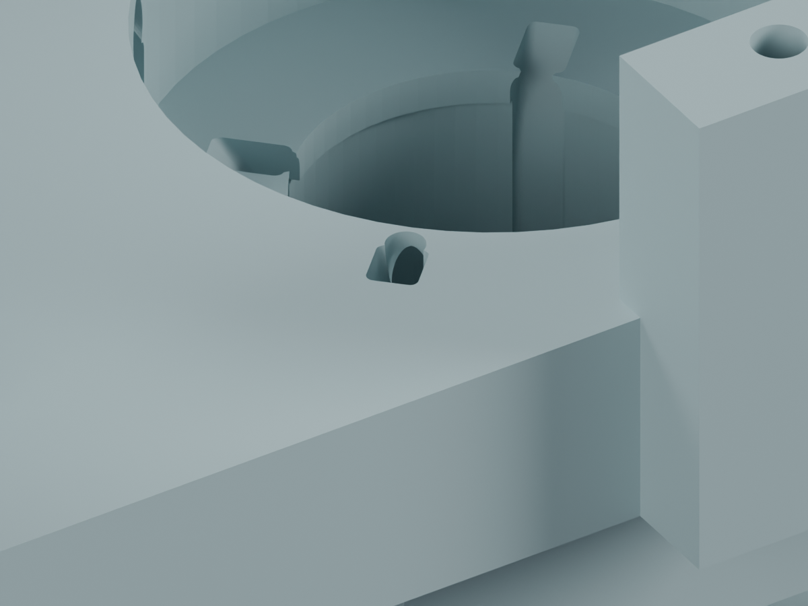

独立候选 J3M，未应用主模型。完整线束仍为 BLOCKED，尚未形成加工放行图。
J3M独立候选已把四处穿线出口薄边整理为连续开口；保存实体的穿装、130个头部姿态、局部相邻剖面和规定角向理线过程的连续间隙检查通过。轴颈壁厚样本不变。候选尚未应用主模型；完整固定、松散尾线操作、俯仰段/CAM、其余7根活动线和FPC仍未完成。

四处上缘总计移除33.876 mm³；没有新增台阶、零件、紧固件。保持轴线、轴颈及其余207个实体。
| 数字检查 | 结果 | 范围 |
|---|---|---|
| 保存网格与局部剖面 | PASS | 两个连通闭合实体；100个相邻剖面中薄边截面片92→0 |
| 端子带线穿入、头部姿态 | PASS | 4个入口；130个组合姿态；名义端子/线间隙下界0.306/0.302 mm |
| 规定的连续角向理线 | PASS | 64个参数区间；弯曲半径下界7.955 mm |
| 全件壁厚、承载与实物线束 | NOT_TESTED | 截面与运动学计算不代表强度、手部操作或弯折寿命 |
局部理线需补入5.10 mm线长。这不是整束下料长度。俯仰段/CAM、固定点、其他活动线及完整FPC仍需完成。
原厂公开资料：JST SH · JST PH · 工艺查询与版本限制
打开独立Blender候选 · 完整说明 · 保存实体复核 · 薄边审查 · 连续理线 · 轴颈截面 · 图像来源 · 复现命令 · 发布清单 · J3历史研究